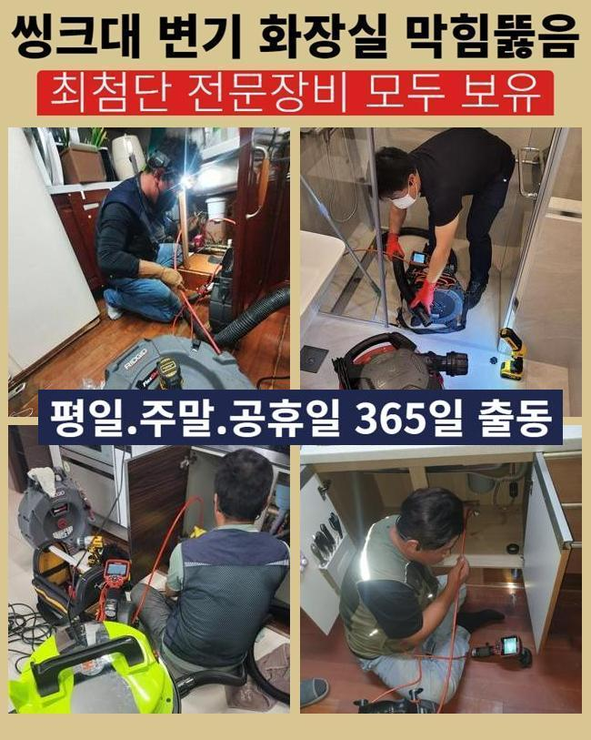
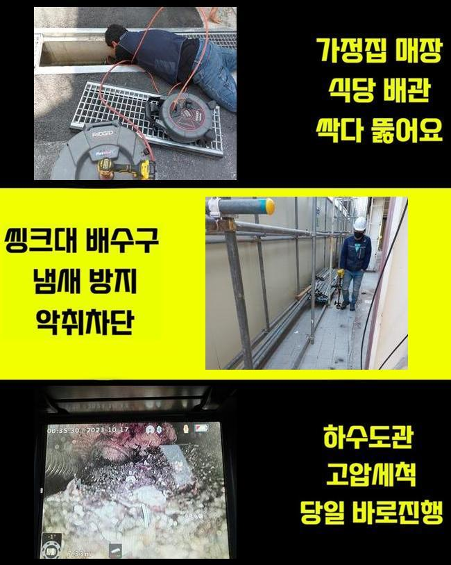
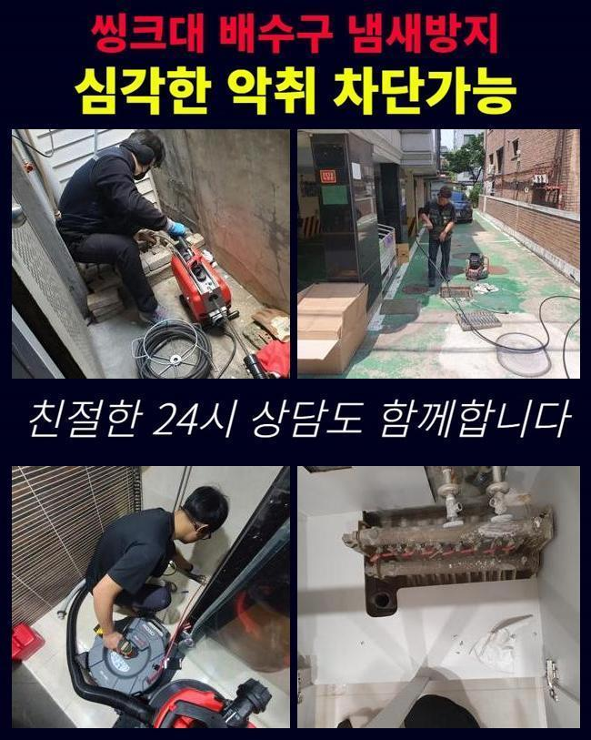
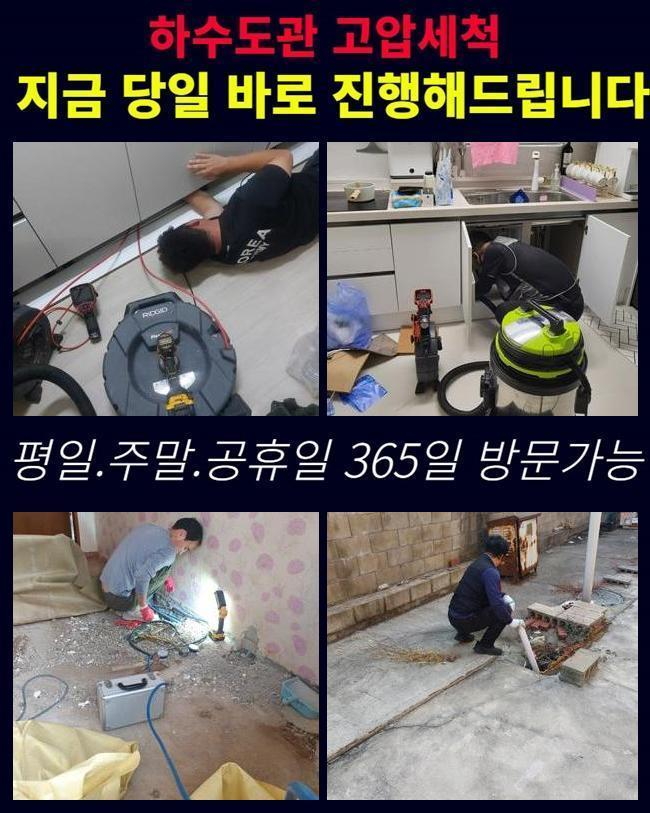
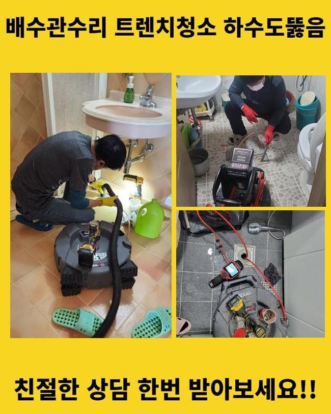
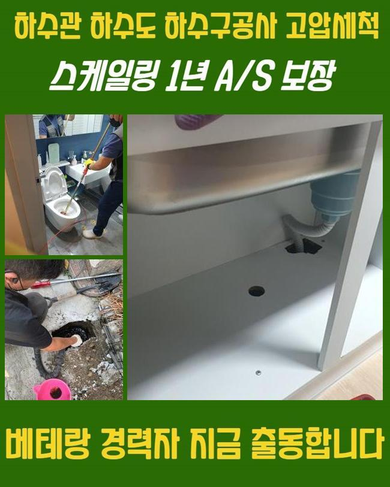
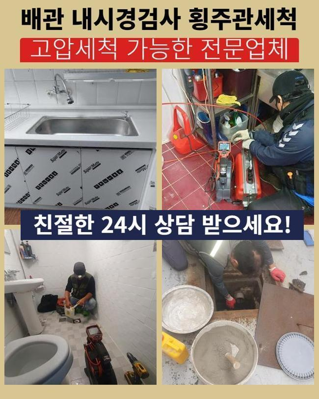

🏠 성남 분당동욕실뚫음 금곡동 냄새차단 누수공사
성남 분당동 싱크대막힘 전문 시공 후기

📋 작업 개요
- 위치: 성남 분당동, 분당동, 성남
- 서비스 유형: 싱크대막힘, 하수구막힘, 배관막힘, 누수수리, 역류해결, 뚫는업체, 배관청소, 고압세척, 설비공사, 악취차단
- 작업 일시: 2025. 1. 30. 21:02
- 업체명: 하수구수사대 (010-5615-2118)
🔍 문제 상황
성남 분당동욕실뚫음 금곡동 냄새차단 누수공사
일상생활시 가끔 일어나는 트러블이 있답니다
대표적으로 관로막힘을 말씀드릴수 있어요
배관이 막혀버리면 주변환경이 더러워질수 있고 생활중의 불편을 확대시키게 됩니다
관로의 막힘상황으로 욕실사용을 하지못하고 역류까지 발발한다면 더욱더 사태는 악화일로로 가게되겠죠
이번에는 투룸에서 관로막힘이 발발해 여러종류의 장비들을 써서 처리한 부분을 안내해 드리도록 할게요
고객께선 집안내의 세탁기기에서 물막힘이 일어났다며 저희쪽에 전화하셨는데요
차량안에 샤프트기기와 석션장비 및 내시경설비를 실은 뒤 고객님의 위치로 출발하였죠
당도하니 고약한 냄새가 올라왔고 찌꺼기들이 역류로 흩어진 모습또한 목도하게 되었어요
세탁버튼을 눌러서 배수하려고 시도했으나 되레 토출되는 사태가 발생했다고 하시네요
간단하게 물만 역류되는게 아니었으며 여러가지 오물들도 나오는 상태였어요
일부의 시설에선 베란다와 싱크대의 하수관이 교차되는 상황도 볼수 있답니다
그부분 역시 점검해보기로 했죠
막힘문제를 면밀하게 알아보려 의뢰자께 화장실이나 기타 공간이 정체되었거나 역류증세가 생긴적은 없었는지에 대해 여쭸는데요

🔎 원인 분석
💡 전문가 진단: 정밀 진단 장비를 사용하여 슬러지의 고착 여부를 판명하고 타격/세척 작업을 실시했습니다.
그저께 물이 안내려가 슈퍼마켓에서 구매했던 구연산과 세제를 투입하신적이 있다 말하셨어요
그것을 근거로 개수대쪽의 배수관에 정체의 이유가 있을거라 추정했답니다
저희들이 방문한 지점의 트러블을 처치하려 사유를 살피기로 했죠
배관배관내시경으로 관로안을 검정하기로 결단하였어요
배수공이 차단되어 내시경마저 안들어갈땐 물청소가 가능한 고압흡입기로 관로의 오물들을 처리하게 됩니다
해당 공정으로 공사시간을 축소시킬수 있는거죠
세정중 다양한 폐수와 고형물들이 배출된것을 확인하였는데요
하지만 해당 업무만으로는 본원적인 막힘의 까닭이 어떠한건지 밝혀내지는 못하였죠
초기에 실행한 흡입장비로 처치못하는 것들이 많았기 때문에 즉각적으로 내시경cctv를 투입하여서 정체가 일어난 파이프를 검사해보기로 했죠
이물들을 면밀히 들어다보니 해안에 많이 보이는 흙과 모래같은 것들이었어요
세탁기에서 나온 정황일 가망성이 높았죠
의뢰자께 휴가를 다녀오셨나 물었더니 동해안 쪽의 바닷가에서 캠핑을 하셨다고 말하셨어요
먼저 자잘한 잔재들을 처치하고 좀더 실질적으로 세정시공을 진행합니다
그러면서 하단부위까지 처치가능한 기계들을 활용하기로 했어요

🔧 작업 과정
내시경카메라를 활용하는 까닭은 배관전체의 문제점을 분명히 파악하고 물막힘을 처리하기 위함입니다
석션장비로 세척을 끝내고 가느다란 호스에 붙은 배관카메라로 관로 안을 조사해 보았어요
깊은 지점까지 점검했고 실체적으로 말썽이된 요소를 발견해낼수 있던거죠
이처럼 하수구 정체는 여러가지 변인들에 기인하여 일어나는 양상을 보이고 정리방법이 간소한것도 아니죠
그렇기때문에 전문적인 기계들을 토대로 공정을 이어나가야 무난하게 끝맺음할수 있는거랍니다
혹시라도 엉성하게 정체막힘문제를 정리하려든다면 더더욱 고장이 심화될수 있단걸 기억해주시길 당부드려요
배수관 군데군데를 내시경cctv로 확인해보고 있어요
관로의 실측값은 예상한것 보다 큰편이고 구성도 난삽하여 바로 이해하기에는 역부족일수 있죠
이러한 상황에서는 가느다란 내시경카메라가 확실한 기능을 할수가 있답니다
내시경배관내시경으로 안쪽을 꼼꼼하게 조사하니 불규칙한 석회성분과 흙성분들이 엉겨붙은 상태였습니다
해당 찌꺼기들은 물과 섞이지 않아서 바위와 같이 경화될수가 있어요
미세한 이물들은 배수가 되어서 오수탱크로 이동하겠지만 동시에 모래알들이 관로로 투입된다면 이 지점처럼 막힘이 생길수 있는거죠
게다가 그상황이 계속된다면 배수관에 단단한 물질층이 생겨날수도 있는거고요
슬러지의 성격에따라 쓰는 기기가 달라집니다
예시를 들어 헝겊등의 커다란 부피의 물체가 막혀있다면 쇠갈고리 등을 투입하여 끌어낸 다음 석션도구로 배수관 내측을 청소해야 됩니다
혹여 이렇게 아니하고 샤프트기기를 바로 적용해버리면 배수관 속이 한층 혼잡해질수가 있는거죠
이물들이 특정한 공간에 많이 모여있다면 인위적으로 파쇄하는 업무를 속행하는데요
여긴 작은 모래알과 뒤엉켜있어서 그걸 플렉스샤프트를 이용해서 분쇄시키고 뚫음시공을 진행한거죠
이번에 내방드린 곳에서는 전 찌꺼기들을 세정한다음 배관카메라로 다시금 점검을 실시했어요
그러고나서 남아있는건 분쇄기기로 깨끗이 소제하고 즉각적으로 통수관련 검사를 실시했는데요
문제없이 상쾌하게 소멸되는걸 목도할수 있었죠
시공과정에서 배출된 폐기물들을 전부 정리해서 치우는것으로 시공을 마무리하였죠


✅ 작업 완료
위의 정체문제를 사전적으로 막기 위해서는 정기적으로 하수구 진단해보았고 세척해야 하겠죠
주방설비쪽의 하수관에선 다양한 노폐물들이 막힘을 유발하고 역류를 일으킬때가 많아요
해당 상황에 직면하면 방치하지말고 곧바로 전문업체를 찾으시는게 바람직합니다
일반인이 다룰수있는 범위는 제한이 뒤따르고 막힘상황이 한층 나빠지는 케이스도 존재하기 때문이에요
전문가의 스케일링 및 고압청소는 간략히 일과를 편안하게 해주는걸 넘어 청결을 지속하는데 필수적인 역할을 수행합니다
그것에 더하여 막힘문제가 지속된다면 타주민에게도 악영향을 가할수 있단걸 알아두시길 부탁드립니다




⚠️ 베란다 누수 및 방수 관리 방법
- ✅ 비가 많이 올 때 창틀 주변이나 아래층 천장에 얼룩이 생기는지 정기적으로 확인해 보세요.
- ✅ 우수관 주변 실리콘 마감이 들뜨거나 깨진 틈새가 있는지 손상 여부를 수시로 체크하세요.
- ✅ 베란다 바닥 타일의 줄눈(메지)이 소실되면 그 틈으로 물이 침투하여 누수가 유발됩니다.
- ✅ 누수 의심 증상 발견 시 방치하면 아래층 손실이 커지므로 즉시 전문가의 진단을 받으십시오.
💡 핵심 정리
- 확실한 장비 작업(내시경 점검 및 샤프트 스케일링)으로 원인을 뿌리 뽑습니다.
- 작업 후 1년 이내에 동일한 부위 재발 시 100% 무상 A/S 서비스를 보장합니다.
- 서울 · 경기 · 인천 전 지역에 24시간 언제든 긴급 출동할 수 있도록 항시 대기 중입니다.
❓ 자주 묻는 질문 (FAQ)
🚨 성남 분당동 싱크대막힘 문제로 고민이신가요?
정확한 원인 진단과 확실한 시공으로 재발 없는 해결을 약속드립니다.
24시간 긴급 출동 | 서울 · 경기 · 인천 전지역 | 1년 내 재발 시 무상 A/S